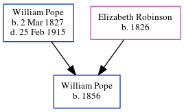

Louisa Pope (née Marshall) c1858 - 1935
[ Home ] | [ Calendar ] | [ Surnames Index ] | [ Errors ] | [ Family History ]Louisa Marshall, the wife of John Isaac Pope (the second cousin three-times-removed on the father's side of Nigel Horne), was born in Normandy, Surrey, England c. 18581 and married John (a bricklayer with whom she had 6 children: Elizabeth A, Lily Louisa, Albert Edward, Sydney J, Frederick Ernest and Leonard Ruskin Sextus, along with 1 surviving child) in Turnham Green, London, England on 16 Feb 18792.
During her life, she was living at Binns Road, Chiswick, London on 5 Apr 18911; and at Eastbury Grove, Chiswick, London on 31 Mar 19013 and on 2 Apr 19114.
She died in 1935 in Brentwood, London, England.
Children
- Elizabeth A was born in 1881
- Lily Louisa was born c. Aug 1885
- Albert Edward was born on 17 Jan 1888
- Sydney J was born in 1889
- Frederick Ernest was born on 21 Apr 1892
Citations
- 1891 England, Wales & Scotland Census - Findmypast (was age 31 and the wife of the head of the household)
- England & Wales Marriages 1837-2005 - Findmypast
- 1901 England, Wales & Scotland Census - Findmypast (was age 42 and the wife of the head of the household)
- 1911 Census for England & Wales - Findmypast (was age 52 and the wife of the head of the household)
Media
1901 England, Wales & Scotland Census - GBC/1901/0007967926
1891 England, Wales & Scotland Census - GBC/1891/0007828392
1911 Census for England & Wales - GBC/1911/RG14/06931/0519/2
Family Tree
Map
Generated by ged2site. Last updated on Jul 3, 2024
Known Issues
Death date (1935) has no citations
No records of living with anyone